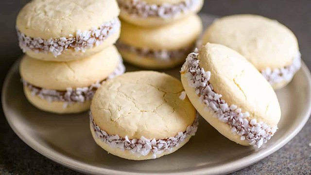

Alfajores

Nothing says Argentinian sweetness as well as this traditional dessert filled with delicious Dulde de Leche.
Ingredients
- 1 ⅔ cups unbleached all-purpose flour
- 2 ½ cups cornstarch
- ½ teaspoon baking soda
- 2 teaspoons baking powder
- 1 cup unsalted butter, softened
- ¾ cup white sugar
- 3 egg yolks
- 1 teaspoon vanilla rum
- ½ teaspoon vanilla extract
- ½ teaspoon lemon extract
- 2 teaspoons lemon zest
- 1 (11.5 ounce) jar dulce de leche
- ½ cup unsweetened shredded coconut
Steps
- Preheat oven to 350 degrees F (175 degrees C). Line baking sheets with parchment paper. Whisk together the flour, cornstarch, baking soda, and baking powder; set aside.
- Beat the butter and sugar with an electric mixer in a large bowl until light and fluffy. Add the egg yolks one at a time, allowing each yolk to blend into the butter mixture before adding the next. Beat in the vanilla rum, vanilla extract, lemon extract, and lemon zest with the last egg. Gently fold in the flour mixture with a spoon, making a crumbly dough. When the dough becomes cohesive enough, press it together into a ball with your hands. Wrap with plastic wrap and chill for 30 minutes to 1 hour.
- Roll out the dough, using as little flour as possible, about 1/4 inch thick. The dough will have an unusual consistency. Cut with a small round cookie cutter. Continue pressing the dough together, rolling it out, and cutting until you have used it all. Place cookies 1/2 inch apart on the prepared cookie sheets.
- Bake in the preheated oven until set but not browned, 7 to 10 minutes. Remove the cookies immediately to cool on a wire rack.
- Spread the underside of a cooled cookie with a teaspoon of dulce de leche, then sandwich together with another cookie until the caramel oozes out the sides. Roll the sides in the shredded coconut.
Back to menu